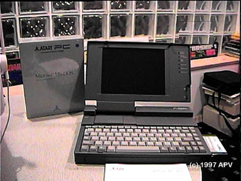

Atari N386SX Laptop

Atari sold a PC latop computer
as part of their ABC (Atari Basic Computer) line. The laptop
was nothing more then a SOTEC laptop (A Japanese company) in Atari
clothing. However Atari made a nice choice in laptops to sell.
(Note the STacy'ish look of the laptop.) The N386SX wasn't terribly heavy,
had parallel/serial/VGA and PS/2 mouse ports, internal 3.5" disk drive
and 40 mb internal hard drive. The system only comes with 1MB
of memory, but an expansion slot on the top of the system allowed for a
2 or 4 MB memory upgrade and coprocessor upgrade. Also another slot
was available for an internal modem card as well. The system
came with an Atari version of the ever popular MS-DOS 5.0 on the hard drive
as well as a diskette which contain a CMOS configuration utility.
(For those interested in owning on of these Laptops, B&C
Atari Sales & Service has several available for sale.)